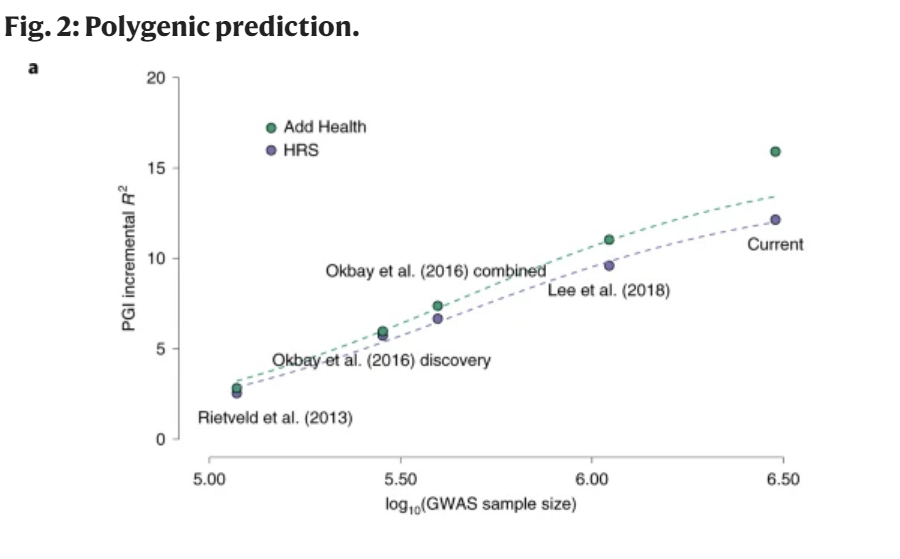

3 Interplay between genes and environment
3.1 BUT the measurement of human norms of reaction is impossible (Lewontin 1974, 190)
This absolutely is a testable hypothesis. John Jinks and David Fulker reviewed the methodological approaches for this exact question. They explain different methods to analyze GxE interaction including Cattell’s method of multiple abstract variance analysis or MAVA, (Cattell 1960, 1963, 1965) comparing sums and differences of twins’ phenotypic values, (Jinks and Fulker 1970) adoption data, (Robert Plomin et al. 2003, 315–16) fitting models with and without an interaction term and seeing which one better conforms to available empirical data, etc.
3.2 BUT both genes and environment play a part because they interact
No geneticist or behavioral geneticist thinks that environments do not play a part in measuring heritability. Every behavioral geneticist believes that each individual is the product of the totality of their genes being expressed in the totality of their environment. (A. Jensen 2012, 50) Whether or not the influences of genetics and environments can be disentangled is a matter of empirics. (Wright et al. 2015)
If all humans were genotypically identical or if all humans lived in perfectly similar environments, there would be no need for heritability estimates since we could attribute all variation to environmental or genetic factors respectively. Since people with different genes live in different environments, we then have an interplay between the two that produce phenotypic variation. Heritability estimates are the tools we can use to measure an observed variation of phenotype to attribute the respective portion to genetic and environmental influence.
3.3 BUT (some conflation of \(\text{GxE}_{\text{biometric}}\) and \(\text{GxE}_{\text{developmental}}\) )
The conflation of the two terms, gene-environment interaction in the statistical, biometric sense and in the common sense, developmental sense is a historic misunderstanding. (Tabery 2007, 2009; A. Jensen 2012, 50)
3.4 BUT additivity means that genes and environments act separately (i.e., do not interact).
This is a fallacy of ambiguity. Academics have separated the difference between statistical GxE interaction effects with the common sense notion on how phenotypic effects of a genotype are influenced by the environment since the beginnings of behavioral genetics. (Waddington 2014, 94) Its use is to be restricted to cases in which phenotypic effects of different genotypes are differently affected by a given environmental change- which is quite different from saying that genetic and environmental effects cannot be disentangled because they “interact.”. (R. Plomin et al. 2012, 118–19)
3.5 BUT genetic contribution is non-additive. Genes and environment typically interact (in the statistical sense) to produce phenotypes.
The rarity of a significant statistical interaction between genes and environment has been established for several decades. Any significant amount of non-additive or GxE variation has largely been “purely a speculation about as yet untested environmental conditions” which even at the time most of the twin studies were criticized, “data concerning normal people moved around within common environmental situations show their norm of reaction for IQ to be in fact rather flat.” (Havender 1976, 609) Additionally, there is no conspiracy against interaction. If an interactive model could be shown to fit the data better than the traditional model, researchers would be quick to use it. (Robert Plomin 1990, 144). Polderman et al. (2015) surveyed every prior twin study and found that “for a majority of traits (69%), the observed statistics are consistent with a simple and parsimonious model where the observed variation is solely due to additive genetic variation. The data are inconsistent with a substantial influence …non-additive genetic variation.” Intelligence was not fully explained by an additive model. GxE and Non-additive genetic variance of complex traits tends to either be very low, or negligible. With dominant genetic effects lower than epistatic. (W. G. Hill, Goddard, and Visscher 2008; Crow 2010; Mäki-Tanila and Hill 2014; Pazokitoroudi et al. 2020; Hivert et al. 2021)
3.6 BUT genetic contribution for ‘g’ or cognitive ability is non-additive
There are two ways to determine if the genetic influence of traits are non-additive. Through twin and family estimations and molecular biological estimates- each method having unique advantages. (Robert Plomin and Von Stumm 2018)
With twin and family data, we have discovered that genetic effects on g seem to be largely additive. (Robert Plomin 1999) Large twin studies like Haworth et al. (2009) and Robert Plomin and Thompson (2007) found that all genetic influence was additive for the entire distribution of intelligence. (see also Robert Plomin and Deary 2014) Since assortative mating naturally increases additivity, estimates after controlling for this find that the majority of the genetic effect to be additive using twin and family data. (Chipuer, Rovine, and Plomin 1990; Vinkhuyzen et al. 2012)
A newer way to measure the genetic variance of a trait that relies on different methodological assumptions than twin and family studies is through molecular biological estimates. (Maciej Trzaskowski et al. 2013) Since complex traits are often extremely polygenic, it is unlikely for genome-wide association studies (GWAS) to fully capture the effect of genetic additive influence, thus, it is understood that these analyses provide a lower bound for measuring the variance of additive genetic influence on traits. (Li et al. 2019) By using genome-wide complex trait analyses (GCTA), however, we can boost genomic coverage and thus increase the estimate for genetic variance. (Yang, Manolio, et al. 2011; William David Hill et al. 2019) The significance of this method is that it can estimate the net effect of genetic influence using DNA of unrelated individuals rather than relying on familial resemblance in groups of special family members such as monozygotic and dizygotic twins who differ in genetic relatedness. (Robert Plomin and Deary 2014) Additionally, GCTA is limited to detecting the additive effects of SNPs; it cannot detect gene–gene or gene–environment interaction. (Yang, Lee, et al. 2011) An earlier GCTA from (M. Trzaskowski et al. 2014) found DNA-estimated heritabilities increased from 0.26 at age 7 to 0.45 at age 12- roughly matching twin data. W. David Hill et al. (2018), a newer study, finds that over 50 percent of differences in intelligence can be explained by genetic effects when a larger number of rare SNPs are included- which matches both current and historical heritability estimates with twin and family models on average. (Polderman et al. 2015)
3.7 BUT because of non-additivity, a high heritability value obtained in a given range of environments may be just the local characteristic of environmental and genetic influences within that particular narrow range of environments, with the situation dramatically changing over a more extended set of environments. Therefore, heritability claims are not generalizable.
First, no one denies that heritability is a population level statistic:
- “Heritability is not a constant that holds for all groups or in all environments.” (Rushton and Jensen 2005)
- “Heritability is a population statistic and the heritability of intelligence may be expected to vary in different populations”; (Lynn and Harvey 2008)
- “The heritability of a trait may change when the conditions producing variation change” (Herrnstein and Murray 2010).
Though heritability is a population level statistic, this doesn’t mean we should be surprised to see estimates that can be generalized under the right conditions. “[W]henever a value is stated for the heritability of a given character it must be understood to refer to a particular population under particular conditions. Values found in other populations under other circumstances will be more or less the same according to whether the structure of the population and the environmental conditions are more or less alike”. (Falconer 1996) The question of generalizing [genetic variability] to other samples and other times can only be answered empirically (the evidence with respect to cognitive abilities suggests considerable generalizability). (Robert Plomin and DeFries 1976, 11)
“Although heritability could differ in different cultures, moderate heritability of g has been found, not only in twin studies in North American and western European countries, but also in Moscow, former East Germany, rural India, urban India, and Japan” (R. Plomin 2002)1. Pesta et al. (2020) found that White, Black, and Hispanic heritabilities were consistently moderate to high, and that these heritabilities did not differ across groups in the United States.
To radically say that heritability estimates are not at all generalizable even across state lines (Moore 2002, 47), would be akin to saying that teaching interventions that work in one state has no generalizability to another.
While some critics have cited the non-experimental nature of human behavioral genetics as a serious methodological deficiency (Michel and Moore 1995, 209), this ironically may actually work in its favor in the context of real world natural experiments versus laboratory experimentation. Not dealing with artificial, laboratory conditions but with real-life situations, its conclusions obtained on given samples are easier to extrapolate to other similar populations (see Winkler and Murphy 1973). Human behavioral genetic researchers have the mixed blessing of working with naturally occurring genetic and environmental variation. The cost is a loss of experimental control; the benefit is an increased likelihood that the result of the research will generalize (Robert Plomin, DeFries, and Fulker 1988, 231; R. Plomin 1986, 99; Robert Plomin and Hershberger 1991, 33)
3.8 BUT drosophila
Even the research on Drosophila, on which Lewontin drew so heavily in his attack on additivity, sometimes points in the opposite direction and fails to uncover massive interactions. For example, as Robert Plomin (1990) p.144 reported, although some G × E interactions were uncovered in a 1978 study of twelve Drosophila strains reared under twenty different environmental conditions, the largest effect accounted only for 2 percent of the total variance.
3.9 BUT the rising heritability of intelligence with age is due to GxE interaction
See here
Deary et al. (2012) reported a rather strong genetic correlation (0.62) between IQ measured at age 11 and IQ measured at age 65-79 in a large scottish sample (N=1,940). In another longitudinal sample, Brant et al. (2009) p. 401-402 report positive genetic correlations between IQs measured at age 1, 2, 3, 4, 7, 12, 16, that tend to increase with age, “signifying that the same genetic effects are evident from infancy to late adolescence, but that these influences increase in importance across development”. Lyons et al. (2009) show a phenotypic correlation for AFQT, a highly g-loaded test, measured at age 20 (N=7,232) and 55 (N=1,237), at about 0.74, for which the genetic correlation was 1.0. The fact that Lyons et al. (2009) found no new genetic influences over the adult development is interesting. Brant et al. (2013) found that the genetic influence during the cognitive development comes both from previous, existing genetic influences and new influences; the authors also report a lower heritability for high-IQ people, and a higher heritability for lower-IQ people (N=11,000). Brant, nevertheless, seems to reject a commonly invoked theory for explaining the rise in heritability, namely, the active GxE correlational model :
- The most prominent theory of developmental increases in the heritability of IQ posits that across development, individuals gain more scope to shape their own environments on the basis of their genetic propensities (active gene-environment correlation), which causes an increase in genetic influence over time (Haworth et al., 2010; Plomin, DeFries, & Loehlin, 1977). Our results challenge this explanation, as they show a later increase in heritability for individuals of higher IQ. To explain our results in the context of active gene-environment correlations, one would need to posit, counterintuitively, that higher-IQ individuals seek out environments concordant with their genetic propensities later in development than do lower-IQ individuals.
The plausibility of their hypothesis is supported by the fact that IQ differences certainly reflect differences in mental age (A. R. Jensen 1980, 559–62; 1999, 370–71). The authors are still open to the possibility of the amplification model which is, at present, perhaps the most likely and tenable hypothesis. Van Soelen et al. (2011) confirmed the amplification model in a pediatric longitudinal sample, consistent with Hoekstra, Bartels, and Boomsma (2007) p. 112 analysis, in which no clear pattern of GxE interaction has been found and in which they show a correlation between verbal and nonverbal abilities that is entirely explained by genetic effects, with stability in nonverbal ability attributed completely to genetic influences between age 5 and 18 (p. 105-109). Subsequently, Leeuwen, Berg, and Boomsma (2008) p. 78, 84-85, 86-87 also report weak effect of GxE interaction (due to nonshared environmental influences), in line with A. Jensen (2012) p. 173-174, and no evidence for cultural transmission between generations, as was also the case in most previous studies. In their best fitting model, assuming phenotypic assortment (i.e., mating based on observable characteristics such as intelligence), as opposed to the model assuming social homogamy (i.e., mating based on environmental resemblance only because spouses of same IQ level meet each other given that people with the same IQ level live in the same social environment), genetic variation contributes 58% to the variation in IQ among children and adults, with the remaining 42% accounted for by unique, nonshared environmental variation. Also, Leeuwen, Berg, and Boomsma (2008) found no evidence of cultural transmission from parents to children, consistent with previous findings (Robert Plomin et al. 1997). Reminding this is essential because under the GxE correlational model, as is the case in Dickens & Flynn, it is assumed that parents transmit no only their genes but also their environment.
More recently, Briley and Tucker-Drob (2013) meta-analysis demonstrates that new genetic influences (innovation; e.g., novel biological changes such as hormonal changes associated with puberty, or environmental changes such as transition from the home to grade school) are likely to explain the increase in heritability at the very early stage of development, but beginning at age 8, genetic amplification becomes predominant, and the effect of new genetic influences drops to zero; the widening of the shaded area (i.e., standard error) with regard to amplification suggests that this parameter is not estimated with much precision, but the authors maintain that their alternative models show the very same phenomenon but more precisely (Figures S3 & S4). In any case, this does not square well with the Dickens-Flynn hypothesis. And thus the fact that Briley and Tucker-Drob (2013) cited Dickens and Flynn (2001) as an illustration of the evidence in favor of the amplification model is a curious non-sequitur.
Much (to all) of the information above is scraped from Hu (2013).
3.10 BUT something about generalist genes not existing
The generalist genes hypothesis (Kovas and Plomin 2006a, 2006b), advanced by Robert Plomin, posits that the same genes that influence, say, school achievement, will also account for IQ test scores, or a cognitive area (math) correlated with another cognitive area (verbal) due to the same genetic influences. In this way, the correlation between these two variables is due to genetic effects. The two key concepts to understand the theory are pleiotropy (a single gene affecting several traits) and polygenicity (each trait is affected by a multitude of genes), the latter reinforcing the former. The theory received a considerable support from numerous studies on very large sample size (Robert Plomin and Kovas 2005; Robert Plomin, Kovas, and Haworth 2007; Haworth, Dale, and Plomin 2009; Docherty et al. 2010; O. Davis, Haworth, and Plomin 2009; Calvin et al. 2012; Chow et al. 2013)
GCTA also succeeds to replicate classical twin analyses. The genetic correlations between g and language, mathematics, reading, height, weight, reveal a great similarity between GCTA and twin estimates (Trzaskowski et al., 2013b).
Robert Plomin and Kovas (2005) Tables 4 & 5 mention that high rG (Correlations between the latent genetic influences on each trait) also is prevalent for cognitive disability, as reading and math disability had an rG of 0.53. Within mathematics, ability and disability are also genetically correlated, with rG of 0.88. Within reading, ability and disability show rG between 0.70 and 0.90. Within language, ability and disability show rG between 0.60 and 0.90. Comorbidity, the correlation of one (dis)ability with another (dis)ability, is also evident. Bivariate heritability analyses through “DF extremes” (DeFries-Fulker) method yield large estimates between, say, reading disability and math ability. This indicates that one gene found for a certain disability will have a high chance to be associated with ability in some other cognitive domain. Deficits in processes are not genetically independent. Robert Plomin, Kovas, and Haworth (2007) write in this matter :
- A common reaction to this conclusion about generalist genes is disbelief because it goes against the common observation that specific disabilities exist. That is, some children with reading problems have no problem with mathematics and vice versa. If genes are generalists, why do specific disabilities occur? There are three reasons. First, genes are also specialists – genetic correlations are not 1.0. Second, nonshared environments are largely specialists (Plomin & Kovas, in press-b). Third, there is less specificity than it might seem. Even though reading and mathematics correlate phenotypically 0.65 in TEDS, some children with reading problems have no problems with mathematics and vice versa. However, this so-called double dissociation is to be expected on statistical grounds alone and has no bearing on the extent to which different causal processes affect reading and mathematics. A related issue concerning the acceptance of these findings is that, although genetic correlations between learning abilities are greater than their phenotypic correlations, we cannot see genetic correlations in the population in the way that we can see phenotypic associations and dissociations.
Posthuma et al. (2003) and Deary, Spinath, and Bates (2006) propose a review of studies showing genetic correlation between g and brain volume, g and cognitive processing (reaction time, inspection time), and in particular the IQ-IT covariance (Luciano et al. 2005) as evidence that a pleiotropic gene model, unlike causal models, has been proved to be the best fitting model, in a large sample (N=2012), hence validating a genetic g hypothesis but not any of the proposed causal paths, either top-down or bottom-up : “In short, there is no causal relationship between IT and IQ; instead, both processes/abilities are partially dependent on the same underlying cause, which analysis has shown to be genetic”. Luciano et al. (2004) had previously demonstrated the existence of a higher-order genetic g among chronometric tests. g is not only confined to psychometric tests. The strong genetic correlations between different cognitive domains (g factor, math, language, reading), usually higher than 0.50, sometimes approaching 1.0, is suggestive of a genetic g.
Much (to all) of the information above is scraped from Hu (2013).
3.11 BUT missing heritability
If all the genes responsible for the heritability of traits could be identified, there would no longer be any need for twin or adoption studies. However, there is a great gap between genes identified so far in GWA studies and heritability estimates— the missing-heritability problem (Maher 2008). One of the most far-reaching results of GWA studies is to show that there are no genes of large effect size in the population, which means that the heritability of complex traits is probably due to many genes of small effect size, and this means that associations will be difficult to detect and replicate (Robert Plomin 2013). For example, the first GWA studies of general cognitive ability (Davies et al. 2011; O. S. Davis et al. 2010) were powered to detect associations that account for as little as .01 of the variance, but they came up empty-handed because the associations with the largest effect accounted for less than .005 of the variance. One of many possible reasons for the missing-heritability problem is that the common SNPs (i.e., SNPs for which the frequency of the less frequent allele is greater than .01) incorporated in commercially available DNA arrays miss the contribution of rare DNA variants (Cirulli and Goldstein 2010). Another possibility is that heritability has been overestimated by twin and adoption studies.
Wikipedia includes the following from their page on the missing heritability problem:
- This resolution to the missing heritability problem was supported by the introduction of Genome-wide complex trait analysis (GCTA) in 2010, which demonstrated that trait similarity could be predicted by the genetic similarity of unrelated strangers on common SNPs treated additively, and for many traits the SNP heritability was indeed a substantial fraction of the overall heritability. The GCTA results were further supported by findings that a small percent of trait variance could be predicted in GWASes without any genome-wide statistically-significant hits by a linear model including all SNPs regardless of p-value; if there were no SNP contribution, this would be unlikely, but it would be what one expected from SNPs whose effects were very imprecisely estimated by a too-small sample. Combined with the upper bound on maximum effect sizes set by the GWASes up to then, this strongly implied that the highly polygenic theory was correct. Examples of complex traits where increasingly large-scale GWASes have yielded the initial hits and then increasing numbers of hits as sample sizes increased from n<20k to n>100k or n>300k include height, educational attainment, and schizophrenia.
Missing heritability is found in GWAS with big enough sample sizes (Kuchenbaecker 2022). Yengo et al. (2022) finds all relavent snips using 21% of the genome (non-hidden heritability SNPs). Compared with previous attemps:
- Lango Allen et al. (2010) with n=183,727 find 180 SNPs totaling to 10 percent SNP heritability
- Wood et al. (2014) with n=253,288 find 697 SNPs totaling to 20 percent SNP heritability
- Yengo et al. (2022) with n=5,380,080 find 12,111 SNPs totaling to 45 percent SNP heritability
we have been able to find much of the heritability what has been supposedly missing from twin studies. In general, twin studies show that height is roughly 60-70 percent heritable meaning that if we were to expand the amount of genome we were searching on, we could potentially catch up to the estimated percent.
GWAS on educational attainment shows this trend as well:

As stated in Okbay et al. (2022), GWAS can currently predict roughly 12 percent of variation in educational attainment. Twin studies show that the heritability of educational attainment is roughly 50-60 percent, so as the sample size increases, perhaps this “missing heritability problem” will be resolved as well.
https://www.researchgate.net/profile/Richard-Ebstein/publication/216608409_Dopamine_D4_Receptor_DRD4_and_Serotonin_Transporter_Promoter_5-HTTLPR_Polymorphisms_and_Temperament_in_Early_Childhood/links/5418297d0cf2218008bf2a44/Dopamine-D4-Receptor-DRD4-and-Serotonin-Transporter-Promoter-5-HTTLPR-Polymorphisms-and-Temperament-in-Early-Childhood.pdf#page=232↩︎